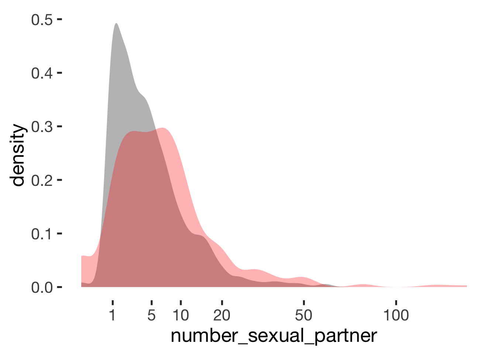
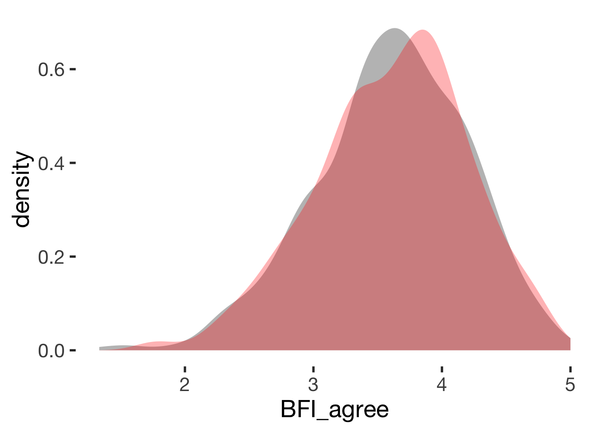
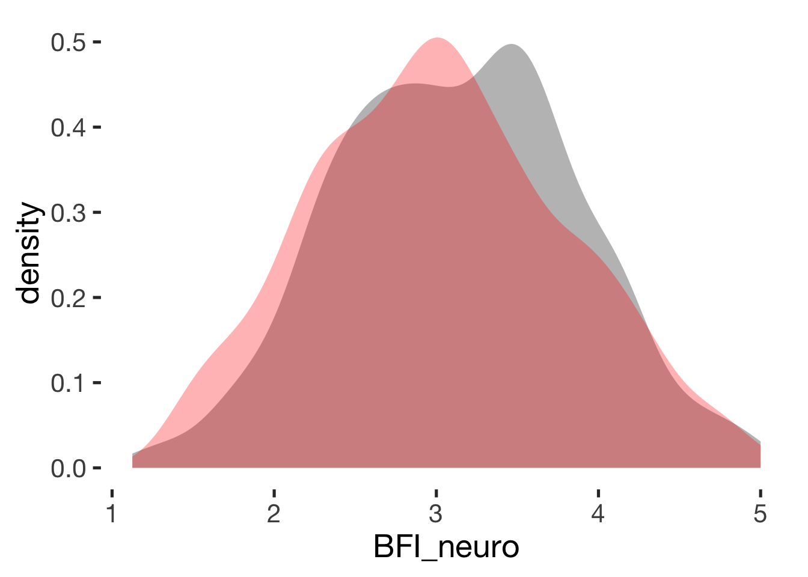
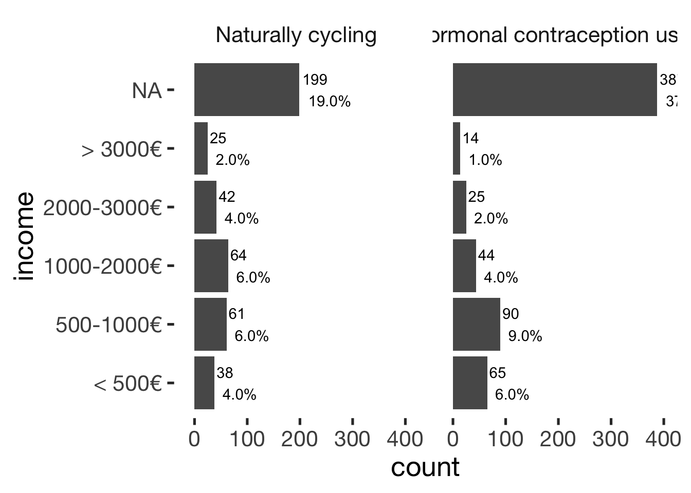
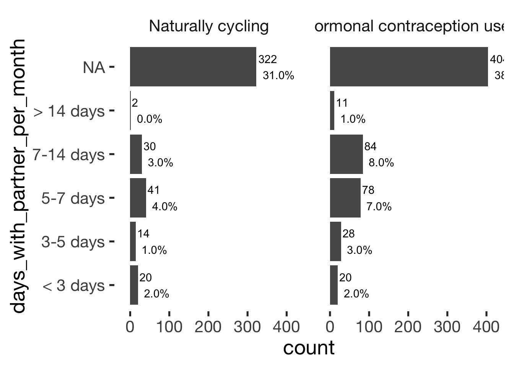
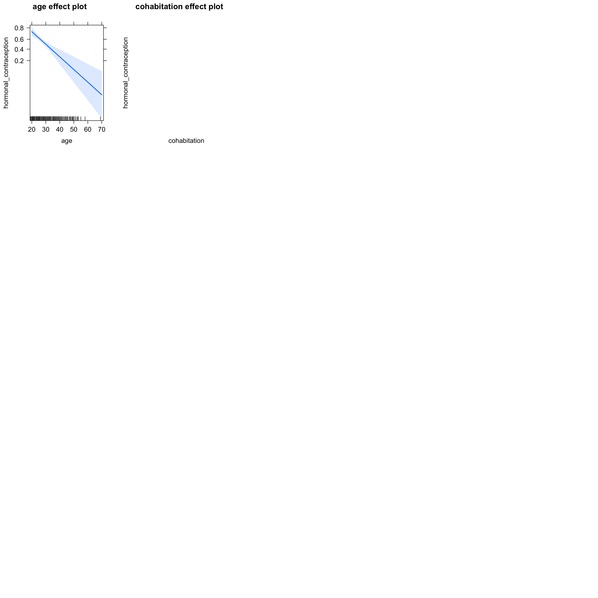
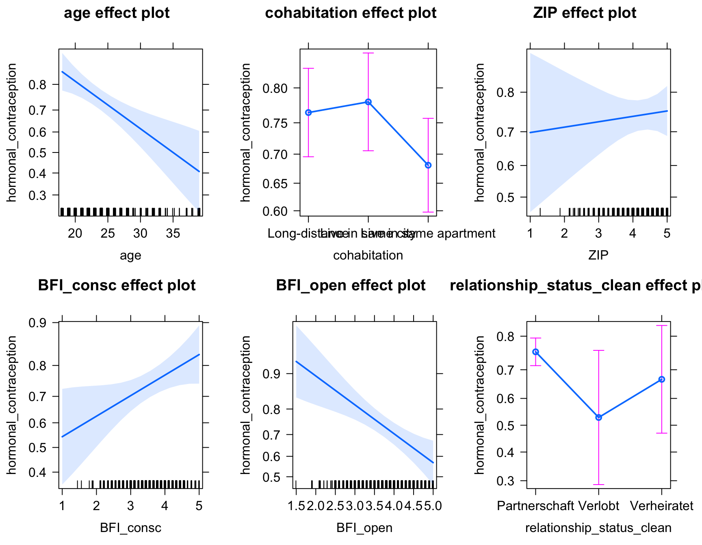
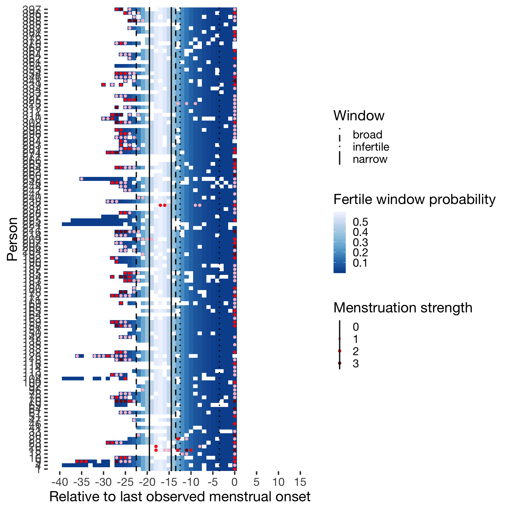

Descriptives
Cycling women (not on hormonal birth control)
Women on hormonal birth control
library(knitr)
opts_chunk$set(fig.width = 9, fig.height = 7, cache = T, warning = F, message = F, render = formr::pander_handler)source("0_helpers.R")
load("full_data.rdata")
hcfacet = facet_wrap(~ hormonal_contraception, labeller = as_labeller(c("0" = "Naturally cycling", "1" = "Hormonal contraception user")))Exclusion criteria, participant flow
After this section, descriptives are only on women who are included.
Participant flow
library(DiagrammeR)
load("pipeline.rdata")
consort = with(pipeline,
paste0('graph TB
start["Participants enrolled<br>
N=',signed_up,'"]
ineligible["Ineligible<br>
n=',ineligible,'"]
notfinish["Did not finish pre-survey<br>
n=',did_not_complete_pre_survey,'"]
eligible["Finished pre-survey<br>
n=',finished_pre_survey,'"]
horm_ineligible["Excluded n=',never_did_diary,' no diary entries,<br>
n=',pregnant,' pregnant, n=',infertile,' infertile,<br>
n=',sterilised,' sterilised,<br>
n=',no_period,' fertility not estimable"]
nc["Naturally cycling<br>
n=',naturally_cycling,'"]
hc["Using hormonal contraception<br>
n=',hc$HC_users,'"]
c_lax_ineligible["Excluded n=',older_than_40,' older than 40, <br>
n=',finished_post_survey,' did not finish study, <br>
n=',hc_users_broad,' used morning-after-pill, <br>
n=',breast_feeding,' breast-feeding, <br>
n=',pill_last_3m,' HC used in last 3m, <br>
n=',hormonal_medicine,' hormonal medication, <br>
n=',long_or_short_cycle,' cycle length not in 22-37 days"]
c_lax["Included (lax)<br>
n=',criterion_lax,'"]
c_cons_ineligible["Excluded n=',heavy_smokers,' heavy smokers, <br>
n=',intensive_sports,' did intensive sports, <br>
n=',changed_contraception,' changed contraception,<br>
n=',broke_up,' broke up, n=',lost_more_than_8kg,' lost > 8kg, <br>
n=',BMI_lt_17,' BMI < 17, n=',BMI_gt_30,' BMI > 30, <br>
n=',confident_that_cycle_irregular,' irregular cycle (confident)"]
c_cons["Included (conservative)<br>
n=',criterion_conservative,'"]
c_strict_ineligible["Excluded n=',stressed,' stressed, <br>
n=',cycle_possibly_irregular,' possibly irregular cycle"]
c_strict["Included (strict)<br>
n=',criterion_strict,'"]
hc_lax_ineligible["Excluded n=',hc$older_than_40,' older than 40,<br>
n=',hc$finished_post_survey,' did not finish study, <br>
n=',hc$breast_feeding,' breast-feeding, <br>
n=',hc$long_or_short_cycle,' cycle length not in 22-37 days"]
hc_lax["Included (lax)<br>
n=',hc$criterion_lax,'"]
hc_cons_ineligible["Excluded n=',hc$heavy_smokers,' heavy smokers, <br>
n=',hc$intensive_sports,' did intensive sports, <br>
n=',hc$changed_contraception,' changed contraception,<br>
n=',hc$broke_up,' broke up, n=',hc$lost_more_than_8kg,' lost > 8kg, <br>
n=',hc$BMI_lt_17,' BMI < 17, n=',hc$BMI_gt_30,' BMI > 30, <br>
n=',hc$confident_that_cycle_irregular,' irregular cycle (confident)"]
hc_cons["Included (conservative)<br>
n=',hc$criterion_conservative,'"]
hc_strict_ineligible["Excluded n=',hc$stressed,' stressed, <br>
n=',cycle_possibly_irregular,' possibly irregular cycle"]
hc_strict["Included (strict)<br>
n=',hc$criterion_strict,'"]
start --> ineligible
start --> eligible
start --> notfinish
eligible --> hc
eligible --> horm_ineligible
eligible --> nc
nc --> c_lax
nc --> c_lax_ineligible
hc --> hc_lax_ineligible
hc --> hc_lax
c_lax --> c_cons
c_lax --> c_cons_ineligible
hc_lax --> hc_cons_ineligible
hc_lax --> hc_cons
c_cons --> c_strict
c_cons --> c_strict_ineligible
hc_cons --> hc_strict_ineligible
hc_cons --> hc_strict
classDef default fill:#fff,stroke:#000,stroke-width:1px
')
)
mermaid(consort, width = 1400, height = 900)Exclusion by hormonal contraception
bar_count(xsection, included_levels)bar_count(xsection, included_levels) + hcfacet
xtabs(~ dodgy_data + included_levels, data = diary)## included_levels
## dodgy_data all lax conservative strict
## FALSE 9960 3655 6261 7465
## TRUE 573 158 204 217xsection = xsection %>% filter(!is.na(included_all)) %>% mutate(duration_relationship_total = duration_relationship_total/12)
diary = diary %>% filter(!is.na(included_all))Data collection
First included participant enrolled on 2014-03-19, last participant enrolled on 2015-07-02. Last diary entry on 2015-12-03.
Tables
options(digits = 2)
xsection %>%
select(age, religiosity, first_time, menarche, duration_relationship_total, cycle_length, number_sexual_partner) %>%
gather(variable, value) %>%
group_by(variable) %>%
filter(!is.na(value)) %>%
summarise(mean = form(mean(value), 1), sd = form(sd(value),1),
median = median(value),
min = min(value), max = max(value)) %>%
pander()## Warning: attributes are not identical across measure variables; they will be dropped| variable | mean | sd | median | min | max |
|---|---|---|---|---|---|
| age | 25.5 | 6.3 | 24 | 18 | 53 |
| cycle_length | 28.4 | 3.3 | 28 | 20 | 40 |
| duration_relationship_total | 3.8 | 4.3 | 2.5 | 0 | 30.08 |
| first_time | 16.9 | 2.3 | 17 | 10 | 29 |
| menarche | 13.0 | 1.4 | 13 | 9 | 19 |
| number_sexual_partner | 7.1 | 11.1 | 4 | 0 | 150 |
| religiosity | 2.0 | 1.1 | 2 | 1 | 5 |
# options(digits = 4)
# xsection %>%
# select(age, religiosity, first_time, menarche, duration_relationship_total, cycle_length, number_sexual_partner) %>%
# gather(variable, value) %>%
# group_by(variable) %>%
# filter(!is.na(value)) %>%
# summarise(mean = round(mean(value),1), sd = round(sd(value),1),
# median = median(value),
# min = min(value), max = round(max(value))) %>%
# stargazer::stargazer(summary = FALSE, rownames = F, label = "Descriptive statistics", align = T, header = F, digits = 1, digits.extra = 1)Comparison with quasi-control group
comps = data_frame(var = character(0),
`HC user - Mean (SD)` = character(0),
`Cycling - Mean (SD)` = character(0),
hedges_g = character(0),
p_value = character(0)
)
compare_by_group = function(var, data) {
sd_hc = sd(data[data$hormonal_contraception == 1,][[var]], na.rm = T)
sd_nc = sd(data[data$hormonal_contraception == 0,][[var]], na.rm = T)
data$hormonal_contraception = factor(if_else(data$hormonal_contraception == 1, "hormonal contraceptive user", "naturally cycling"))
comp = as.formula(paste0(var, " ~ hormonal_contraception"))
tt = t.test(comp, data = data)
print(tt)
eff = effsize::cohen.d(comp, data = data, hedges.correction = TRUE, na.rm = T, pooled = FALSE)
print(eff)
summary = data_frame(var = var,
`HC user - Mean (SD)` = paste0(form(tt$estimate[1], 1)," (", form(sd_hc, 1),")"),
`Cycling - Mean (SD)` = paste0(form(tt$estimate[2], 1), " (", form(sd_nc, 1), ")"),
hedges_g = form(eff$estimate),
p_value = pvalues(tt$p.value)
)
rownames(summary) = NULL
comps <<- bind_rows(comps, summary)
ggplot(data, aes_string(var, colour = "hormonal_contraception", fill = "hormonal_contraception")) +
geom_density(alpha = 0.3, size = 0) +
scale_color_manual("", values = c("naturally cycling" = "red", "hormonal contraceptive user" = "black"), guide = F) +
scale_fill_manual("", values = c("naturally cycling" = "red", "hormonal contraceptive user" = "black"), guide = F)
}Age
compare_by_group("age", xsection)##
## Welch Two Sample t-test
##
## data: age by hormonal_contraception
## t = -10, df = 600, p-value <2e-16
## alternative hypothesis: true difference in means is not equal to 0
## 95 percent confidence interval:
## -5.6 -4.0
## sample estimates:
## mean in group hormonal contraceptive user mean in group naturally cycling
## 24 28
##
##
## Hedges's g
##
## g estimate: 1.1 (large)
## 95 percent confidence interval:
## inf sup
## 0.96 1.23
Religiosity
compare_by_group("religiosity", xsection)##
## Welch Two Sample t-test
##
## data: religiosity by hormonal_contraception
## t = -0.1, df = 900, p-value = 0.9
## alternative hypothesis: true difference in means is not equal to 0
## 95 percent confidence interval:
## -0.15 0.13
## sample estimates:
## mean in group hormonal contraceptive user mean in group naturally cycling
## 2 2
##
##
## Hedges's g
##
## g estimate: 0.009 (negligible)
## 95 percent confidence interval:
## inf sup
## -0.11 0.13
Age at first time
compare_by_group("first_time", xsection)##
## Welch Two Sample t-test
##
## data: first_time by hormonal_contraception
## t = 0.1, df = 800, p-value = 0.9
## alternative hypothesis: true difference in means is not equal to 0
## 95 percent confidence interval:
## -0.28 0.32
## sample estimates:
## mean in group hormonal contraceptive user mean in group naturally cycling
## 17 17
##
##
## Hedges's g
##
## g estimate: -0.0094 (negligible)
## 95 percent confidence interval:
## inf sup
## -0.14 0.12## Warning: Removed 29 rows containing non-finite values (stat_density).Age at menarche
compare_by_group("menarche", xsection)##
## Welch Two Sample t-test
##
## data: menarche by hormonal_contraception
## t = 0.6, df = 400, p-value = 0.6
## alternative hypothesis: true difference in means is not equal to 0
## 95 percent confidence interval:
## -0.18 0.34
## sample estimates:
## mean in group hormonal contraceptive user mean in group naturally cycling
## 13 13
##
##
## Hedges's g
##
## g estimate: -0.06 (negligible)
## 95 percent confidence interval:
## inf sup
## -0.24 0.12## Warning: Removed 585 rows containing non-finite values (stat_density).
Relationship duration
compare_by_group("duration_relationship_total", xsection) + scale_x_sqrt(breaks = c(1,5, 10, 20, 30))##
## Welch Two Sample t-test
##
## data: duration_relationship_total by hormonal_contraception
## t = -7, df = 600, p-value = 6e-12
## alternative hypothesis: true difference in means is not equal to 0
## 95 percent confidence interval:
## -2.7 -1.5
## sample estimates:
## mean in group hormonal contraceptive user mean in group naturally cycling
## 2.9 5.0
##
##
## Hedges's g
##
## g estimate: 0.7 (medium)
## 95 percent confidence interval:
## inf sup
## 0.57 0.83## Warning: Removed 5 rows containing non-finite values (stat_density).
Reported cycle length
compare_by_group("cycle_length", xsection)##
## Welch Two Sample t-test
##
## data: cycle_length by hormonal_contraception
## t = -6, df = 800, p-value = 0.00000001
## alternative hypothesis: true difference in means is not equal to 0
## 95 percent confidence interval:
## -1.6 -0.8
## sample estimates:
## mean in group hormonal contraceptive user mean in group naturally cycling
## 28 29
##
##
## Hedges's g
##
## g estimate: 0.41 (small)
## 95 percent confidence interval:
## inf sup
## 0.29 0.54Reported cycle regularity
jmv::contTables(
data = xsection,
rows = c( "cycle_regularity"),
cols = "hormonal_contraception", pcCol = T)##
## CONTINGENCY TABLES
##
## Contingency Tables
## ──────────────────────────────────────────────────────────────────────────────────────
## cycle_regularity 0 1 Total
## ──────────────────────────────────────────────────────────────────────────────────────
## very regular,
## up to 2 days off Observed 195 502 697
## % within column 46.3 80.7
##
## slightly irregular,
## up to 5 days off Observed 142 72 214
## % within column 33.7 11.6
##
## irregular,
## more than 5 days off Observed 84 48 132
## % within column 20.0 7.7
##
## Total Observed 421 622 1043
## % within column 100.0 100.0
## ──────────────────────────────────────────────────────────────────────────────────────
##
##
## χ² Tests
## ───────────────────────────────
## Value df p
## ───────────────────────────────
## χ² 134 2 < .001
## N 1043
## ───────────────────────────────Number of sexual partners
compare_by_group("number_sexual_partner", xsection) + scale_x_sqrt(breaks = c(1,5, 10, 20, 50, 100))##
## Welch Two Sample t-test
##
## data: number_sexual_partner by hormonal_contraception
## t = -5, df = 600, p-value = 0.000006
## alternative hypothesis: true difference in means is not equal to 0
## 95 percent confidence interval:
## -5.1 -2.0
## sample estimates:
## mean in group hormonal contraceptive user mean in group naturally cycling
## 5.7 9.3
##
##
## Hedges's g
##
## g estimate: 0.5 (small)
## 95 percent confidence interval:
## inf sup
## 0.37 0.62
Extraversion
compare_by_group("BFI_extra", xsection)##
## Welch Two Sample t-test
##
## data: BFI_extra by hormonal_contraception
## t = -0.5, df = 900, p-value = 0.6
## alternative hypothesis: true difference in means is not equal to 0
## 95 percent confidence interval:
## -0.122 0.074
## sample estimates:
## mean in group hormonal contraceptive user mean in group naturally cycling
## 3.5 3.5
##
##
## Hedges's g
##
## g estimate: 0.029 (negligible)
## 95 percent confidence interval:
## inf sup
## -0.095 0.153
Agreeableness
compare_by_group("BFI_agree", xsection)##
## Welch Two Sample t-test
##
## data: BFI_agree by hormonal_contraception
## t = 0.04, df = 900, p-value = 1
## alternative hypothesis: true difference in means is not equal to 0
## 95 percent confidence interval:
## -0.071 0.075
## sample estimates:
## mean in group hormonal contraceptive user mean in group naturally cycling
## 3.6 3.6
##
##
## Hedges's g
##
## g estimate: -0.0028 (negligible)
## 95 percent confidence interval:
## inf sup
## -0.13 0.12
Neuroticism
compare_by_group("BFI_neuro", xsection)##
## Welch Two Sample t-test
##
## data: BFI_neuro by hormonal_contraception
## t = 2, df = 900, p-value = 0.04
## alternative hypothesis: true difference in means is not equal to 0
## 95 percent confidence interval:
## 0.0062 0.1941
## sample estimates:
## mean in group hormonal contraceptive user mean in group naturally cycling
## 3.1 3.0
##
##
## Hedges's g
##
## g estimate: -0.14 (negligible)
## 95 percent confidence interval:
## inf sup
## -0.260 -0.012
Conscientiousness
compare_by_group("BFI_consc", xsection)##
## Welch Two Sample t-test
##
## data: BFI_consc by hormonal_contraception
## t = 2, df = 900, p-value = 0.02
## alternative hypothesis: true difference in means is not equal to 0
## 95 percent confidence interval:
## 0.013 0.182
## sample estimates:
## mean in group hormonal contraceptive user mean in group naturally cycling
## 3.6 3.5
##
##
## Hedges's g
##
## g estimate: -0.15 (negligible)
## 95 percent confidence interval:
## inf sup
## -0.271 -0.023Openness
compare_by_group("BFI_open", xsection)##
## Welch Two Sample t-test
##
## data: BFI_open by hormonal_contraception
## t = -5, df = 900, p-value = 0.0000009
## alternative hypothesis: true difference in means is not equal to 0
## 95 percent confidence interval:
## -0.28 -0.12
## sample estimates:
## mean in group hormonal contraceptive user mean in group naturally cycling
## 3.6 3.8
##
##
## Hedges's g
##
## g estimate: 0.31 (small)
## 95 percent confidence interval:
## inf sup
## 0.18 0.43Relationship satisfaction
compare_by_group("ZIP", xsection)##
## Welch Two Sample t-test
##
## data: ZIP by hormonal_contraception
## t = 3, df = 800, p-value = 0.003
## alternative hypothesis: true difference in means is not equal to 0
## 95 percent confidence interval:
## 0.045 0.225
## sample estimates:
## mean in group hormonal contraceptive user mean in group naturally cycling
## 4.2 4.0
##
##
## Hedges's g
##
## g estimate: -0.2 (negligible)
## 95 percent confidence interval:
## inf sup
## -0.321 -0.073
Occupation
xsection$occupation_clean = factor(xsection$occupation_clean, c( "Studentin", "Schülerin", "Auszubildende", "Berufstätig", "Hausfrau", "Nicht berufstätig"))
jmv::contTables(
data = xsection,
rows = c( "occupation_clean"),
cols = "hormonal_contraception", pcCol = T)##
## CONTINGENCY TABLES
##
## Contingency Tables
## ───────────────────────────────────────────────────────────────────
## occupation_clean 0 1 Total
## ───────────────────────────────────────────────────────────────────
## Studentin Observed 247 489 736
## % within column 58.8 78.9
##
## Schülerin Observed 3 12 15
## % within column 0.7 1.9
##
## Auszubildende Observed 4 10 14
## % within column 1.0 1.6
##
## Berufstätig Observed 145 101 246
## % within column 34.5 16.3
##
## Hausfrau Observed 12 6 18
## % within column 2.9 1.0
##
## Nicht berufstätig Observed 9 2 11
## % within column 2.1 0.3
##
## Total Observed 420 620 1040
## % within column 100.0 100.0
## ───────────────────────────────────────────────────────────────────
##
##
## χ² Tests
## ───────────────────────────────
## Value df p
## ───────────────────────────────
## χ² 65.8 5 < .001
## N 1040
## ───────────────────────────────bar_count(xsection, occupation_clean) + hcfacet
Religion
jmv::contTables(
data = xsection,
rows = c( "religion_clean"),
cols = "hormonal_contraception", pcCol = T)##
## CONTINGENCY TABLES
##
## Contingency Tables
## ────────────────────────────────────────────────────────────────
## religion_clean 0 1 Total
## ────────────────────────────────────────────────────────────────
## Buddhismus Observed 5 2 7
## % within column 1.2 0.3
##
## Christentum Observed 214 365 579
## % within column 51.0 58.8
##
## Islam Observed 8 7 15
## % within column 1.9 1.1
##
## Judentum Observed 1 0 1
## % within column 0.2 0.0
##
## Nicht gläubig Observed 192 247 439
## % within column 45.7 39.8
##
## Total Observed 420 621 1041
## % within column 100.0 100.0
## ────────────────────────────────────────────────────────────────
##
##
## χ² Tests
## ──────────────────────────────
## Value df p
## ──────────────────────────────
## χ² 10.2 4 0.037
## N 1041
## ──────────────────────────────bar_count(xsection, religion_clean) + hcfacetIncome
xsection$income = factor(xsection$income, c("< 500€", "500-1000€", "1000-2000€", "2000-3000€", "> 3000€"))
jmv::contTables(
data = xsection,
rows = c( "income"),
cols = "hormonal_contraception", pcCol = T)##
## CONTINGENCY TABLES
##
## Contingency Tables
## ────────────────────────────────────────────────────────────
## income 0 1 Total
## ────────────────────────────────────────────────────────────
## < 500€ Observed 38 65 103
## % within column 17.0 27.7
##
## 500-1000€ Observed 60 90 150
## % within column 26.9 38.3
##
## 1000-2000€ Observed 63 44 107
## % within column 28.3 18.7
##
## 2000-3000€ Observed 40 23 63
## % within column 17.9 9.8
##
## > 3000€ Observed 22 13 35
## % within column 9.9 5.5
##
## Total Observed 223 235 458
## % within column 100.0 100.0
## ────────────────────────────────────────────────────────────
##
##
## χ² Tests
## ───────────────────────────────
## Value df p
## ───────────────────────────────
## χ² 23.1 4 < .001
## N 458
## ───────────────────────────────bar_count(xsection, income) + hcfacet
Income partner
xsection$income_partner = factor(xsection$income_partner, c("< 500€", "500-1000€", "1000-2000€", "2000-3000€", "> 3000€"))
jmv::contTables(
data = xsection,
rows = c( "income_partner"),
cols = "hormonal_contraception", pcCol = T)##
## CONTINGENCY TABLES
##
## Contingency Tables
## ────────────────────────────────────────────────────────────────
## income_partner 0 1 Total
## ────────────────────────────────────────────────────────────────
## < 500€ Observed 62 121 183
## % within column 14.7 19.5
##
## 500-1000€ Observed 121 244 365
## % within column 28.7 39.2
##
## 1000-2000€ Observed 101 141 242
## % within column 24.0 22.7
##
## 2000-3000€ Observed 62 73 135
## % within column 14.7 11.7
##
## > 3000€ Observed 75 43 118
## % within column 17.8 6.9
##
## Total Observed 421 622 1043
## % within column 100.0 100.0
## ────────────────────────────────────────────────────────────────
##
##
## χ² Tests
## ───────────────────────────────
## Value df p
## ───────────────────────────────
## χ² 39.4 4 < .001
## N 1043
## ───────────────────────────────bar_count(xsection, income_partner) + hcfacet
Relationship status
xsection$relationship_status_clean = factor(xsection$relationship_status_clean, levels = c("Partnerschaft", "Verlobt", "Verheiratet"))
jmv::contTables(
data = xsection,
rows = c( "relationship_status_clean"),
cols = "hormonal_contraception", pcCol = T)##
## CONTINGENCY TABLES
##
## Contingency Tables
## ───────────────────────────────────────────────────────────────────────────
## relationship_status_clean 0 1 Total
## ───────────────────────────────────────────────────────────────────────────
## Partnerschaft Observed 301 576 877
## % within column 71.5 92.6
##
## Verlobt Observed 21 18 39
## % within column 5.0 2.9
##
## Verheiratet Observed 99 28 127
## % within column 23.5 4.5
##
## Total Observed 421 622 1043
## % within column 100.0 100.0
## ───────────────────────────────────────────────────────────────────────────
##
##
## χ² Tests
## ───────────────────────────────
## Value df p
## ───────────────────────────────
## χ² 90.8 2 < .001
## N 1043
## ───────────────────────────────bar_count(xsection, relationship_status_clean) + hcfacet
Cohabitation
xsection$cohabitation = factor(xsection$cohabitation, c("Long-distance", "Live in same city", "Live in same apartment"))
jmv::contTables(
data = xsection,
rows = c( "cohabitation"),
cols = "hormonal_contraception", pcCol = T)##
## CONTINGENCY TABLES
##
## Contingency Tables
## ────────────────────────────────────────────────────────────────────────
## cohabitation 0 1 Total
## ────────────────────────────────────────────────────────────────────────
## Long-distance Observed 107 221 328
## % within column 25.4 35.5
##
## Live in same city Observed 89 206 295
## % within column 21.1 33.1
##
## Live in same apartment Observed 225 195 420
## % within column 53.4 31.4
##
## Total Observed 421 622 1043
## % within column 100.0 100.0
## ────────────────────────────────────────────────────────────────────────
##
##
## χ² Tests
## ───────────────────────────────
## Value df p
## ───────────────────────────────
## χ² 51.3 2 < .001
## N 1043
## ───────────────────────────────bar_count(xsection, cohabitation) + hcfacetjmv::contTables(
data = xsection,
rows = c( "days_with_partner_per_month"),
cols = "hormonal_contraception", pcCol = T)##
## CONTINGENCY TABLES
##
## Contingency Tables
## ─────────────────────────────────────────────────────────────────────────────
## days_with_partner_per_month 0 1 Total
## ─────────────────────────────────────────────────────────────────────────────
## < 3 days Observed 20 20 40
## % within column 18.7 9.0
##
## 3-5 days Observed 14 28 42
## % within column 13.1 12.7
##
## 5-7 days Observed 41 78 119
## % within column 38.3 35.3
##
## 7-14 days Observed 30 84 114
## % within column 28.0 38.0
##
## > 14 days Observed 2 11 13
## % within column 1.9 5.0
##
## Total Observed 107 221 328
## % within column 100.0 100.0
## ─────────────────────────────────────────────────────────────────────────────
##
##
## χ² Tests
## ──────────────────────────────
## Value df p
## ──────────────────────────────
## χ² 9.51 4 0.050
## N 328
## ──────────────────────────────bar_count(xsection, days_with_partner_per_month) + hcfacet
jmv::contTables(
data = xsection,
rows = c( "days_with_partner"),
cols = "hormonal_contraception", pcCol = T)##
## CONTINGENCY TABLES
##
## Contingency Tables
## ───────────────────────────────────────────────────────────────────
## days_with_partner 0 1 Total
## ───────────────────────────────────────────────────────────────────
## < 3 days Observed 118 201 319
## % within column 28.0 32.3
##
## 3-5 days Observed 94 213 307
## % within column 22.3 34.2
##
## 7 days Observed 209 208 417
## % within column 49.6 33.4
##
## Total Observed 421 622 1043
## % within column 100.0 100.0
## ───────────────────────────────────────────────────────────────────
##
##
## χ² Tests
## ───────────────────────────────
## Value df p
## ───────────────────────────────
## χ² 30.1 2 < .001
## N 1043
## ───────────────────────────────bar_count(xsection, days_with_partner) + hcfacetjmv::contTables(
data = xsection,
rows = c( "nights_with_partner"),
cols = "hormonal_contraception", pcCol = T)##
## CONTINGENCY TABLES
##
## Contingency Tables
## ─────────────────────────────────────────────────────────────────────
## nights_with_partner 0 1 Total
## ─────────────────────────────────────────────────────────────────────
## < 3 nights Observed 142 239 381
## % within column 33.7 38.4
##
## 3-5 nights Observed 100 191 291
## % within column 23.8 30.7
##
## 7 nights Observed 179 192 371
## % within column 42.5 30.9
##
## Total Observed 421 622 1043
## % within column 100.0 100.0
## ─────────────────────────────────────────────────────────────────────
##
##
## χ² Tests
## ───────────────────────────────
## Value df p
## ───────────────────────────────
## χ² 15.4 2 < .001
## N 1043
## ───────────────────────────────bar_count(xsection, nights_with_partner) + hcfacetLiving situation
xsection$living_situation = factor(xsection$living_situation)
jmv::contTables(
data = xsection,
rows = c( "living_situation"),
cols = "hormonal_contraception", pcCol = T)##
## CONTINGENCY TABLES
##
## Contingency Tables
## ────────────────────────────────────────────────────────────────────────────────
## living_situation 0 1 Total
## ────────────────────────────────────────────────────────────────────────────────
## living alone Observed 90 175 265
## % within column 21.4 28.1
##
## living in all-female flatshare Observed 41 116 157
## % within column 9.7 18.6
##
## living in mixed-sex flatshare Observed 65 136 201
## % within column 15.4 21.9
##
## living with partner Observed 225 195 420
## % within column 53.4 31.4
##
## Total Observed 421 622 1043
## % within column 100.0 100.0
## ────────────────────────────────────────────────────────────────────────────────
##
##
## χ² Tests
## ───────────────────────────────
## Value df p
## ───────────────────────────────
## χ² 53.6 3 < .001
## N 1043
## ───────────────────────────────bar_count(xsection, living_situation) + hcfacet
Children
xsection$children_broad_categories = factor(xsection$children_broad_categories, levels = c("no_children", "children"))
jmv::contTables(
data = xsection,
rows = c( "children_narrow_categories"),
cols = "hormonal_contraception", pcCol = T)##
## CONTINGENCY TABLES
##
## Contingency Tables
## ────────────────────────────────────────────────────────────────────────────
## children_narrow_categories 0 1 Total
## ────────────────────────────────────────────────────────────────────────────
## Biological children Observed 80 25 105
## % within column 19.0 4.0
##
## Complex family Observed 4 3 7
## % within column 1.0 0.5
##
## Foster children Observed 0 1 1
## % within column 0.0 0.2
##
## No children Observed 331 591 922
## % within column 78.6 95.0
##
## Step children Observed 6 2 8
## % within column 1.4 0.3
##
## Total Observed 421 622 1043
## % within column 100.0 100.0
## ────────────────────────────────────────────────────────────────────────────
##
##
## χ² Tests
## ───────────────────────────────
## Value df p
## ───────────────────────────────
## χ² 69.1 4 < .001
## N 1043
## ───────────────────────────────bar_count(xsection, children_narrow_categories) + hcfacetjmv::contTables(
data = xsection,
rows = c( "children_broad_categories"),
cols = "hormonal_contraception", pcCol = T)##
## CONTINGENCY TABLES
##
## Contingency Tables
## ───────────────────────────────────────────────────────────────────────────
## children_broad_categories 0 1 Total
## ───────────────────────────────────────────────────────────────────────────
## no_children Observed 332 593 925
## % within column 78.9 95.3
##
## children Observed 89 29 118
## % within column 21.1 4.7
##
## Total Observed 421 622 1043
## % within column 100.0 100.0
## ───────────────────────────────────────────────────────────────────────────
##
##
## χ² Tests
## ───────────────────────────────
## Value df p
## ───────────────────────────────
## χ² 67.9 1 < .001
## N 1043
## ───────────────────────────────bar_count(xsection, children_broad_categories) + hcfacet
Comparison summary
Comparison of continuous variables
pander(comps)| var | HC user - Mean (SD) | Cycling - Mean (SD) | hedges_g | p_value |
|---|---|---|---|---|
| age | 23.6 (4.4) | 28.4 (7.6) | 1.10 | < .001 |
| religiosity | 2.0 (1.1) | 2.0 (1.2) | 0.01 | = .891 |
| first_time | 16.9 (2.3) | 16.9 (2.4) | -0.01 | = .886 |
| menarche | 13.0 (1.3) | 13.0 (1.5) | -0.06 | = .557 |
| duration_relationship_total | 2.9 (3.0) | 5.0 (5.5) | 0.70 | < .001 |
| cycle_length | 27.9 (2.9) | 29.1 (3.6) | 0.41 | < .001 |
| number_sexual_partner | 5.7 (7.2) | 9.3 (14.9) | 0.50 | < .001 |
| BFI_extra | 3.5 (0.8) | 3.5 (0.8) | 0.03 | = .638 |
| BFI_agree | 3.6 (0.6) | 3.6 (0.6) | 0.00 | = .964 |
| BFI_neuro | 3.1 (0.7) | 3.0 (0.8) | -0.14 | = .037 |
| BFI_consc | 3.6 (0.7) | 3.5 (0.7) | -0.15 | = .024 |
| BFI_open | 3.6 (0.6) | 3.8 (0.6) | 0.31 | < .001 |
| ZIP | 4.2 (0.7) | 4.0 (0.8) | -0.20 | = .003 |
Categorical regression with many predictors at once
altogether = glm(hormonal_contraception ~ age + cohabitation + living_situation + religiosity + ZIP + BFI_extra + BFI_neuro + BFI_agree + BFI_consc + BFI_open + first_time + duration_relationship_years + log1p(number_sexual_partner) + children_broad_categories + relationship_status_clean + occupation_clean + income_partner, data = xsection, family = binomial("probit"))
summary(altogether)##
## Call:
## glm(formula = hormonal_contraception ~ age + cohabitation + living_situation +
## religiosity + ZIP + BFI_extra + BFI_neuro + BFI_agree + BFI_consc +
## BFI_open + first_time + duration_relationship_years + log1p(number_sexual_partner) +
## children_broad_categories + relationship_status_clean + occupation_clean +
## income_partner, family = binomial("probit"), data = xsection)
##
## Deviance Residuals:
## Min 1Q Median 3Q Max
## -2.421 -1.014 0.578 0.851 2.616
##
## Coefficients: (1 not defined because of singularities)
## Estimate Std. Error z value Pr(>|z|)
## (Intercept) 1.5811 0.7481 2.11 0.03455 *
## age -0.0738 0.0152 -4.84 0.0000013 ***
## cohabitationLive in same city 0.1618 0.1173 1.38 0.16774
## cohabitationLive in same apartment -0.2031 0.1321 -1.54 0.12423
## living_situationliving in all-female flatshare 0.0626 0.1505 0.42 0.67762
## living_situationliving in mixed-sex flatshare -0.1316 0.1366 -0.96 0.33512
## living_situationliving with partner NA NA NA NA
## religiosity 0.0230 0.0424 0.54 0.58694
## ZIP 0.1509 0.0632 2.39 0.01689 *
## BFI_extra 0.0254 0.0623 0.41 0.68366
## BFI_neuro 0.0994 0.0668 1.49 0.13683
## BFI_agree -0.0109 0.0818 -0.13 0.89375
## BFI_consc 0.2267 0.0701 3.24 0.00122 **
## BFI_open -0.3597 0.0738 -4.87 0.0000011 ***
## first_time 0.0106 0.0226 0.47 0.63883
## duration_relationship_years 0.0206 0.0179 1.15 0.25107
## log1p(number_sexual_partner) -0.0639 0.0799 -0.80 0.42381
## children_broad_categorieschildren -0.1042 0.1817 -0.57 0.56640
## relationship_status_cleanVerlobt -0.1328 0.2402 -0.55 0.58034
## relationship_status_cleanVerheiratet -0.6300 0.1910 -3.30 0.00097 ***
## occupation_cleanSchülerin 0.5031 0.4510 1.12 0.26460
## occupation_cleanAuszubildende 0.3145 0.4010 0.78 0.43279
## occupation_cleanBerufstätig 0.0759 0.1350 0.56 0.57375
## occupation_cleanHausfrau 0.3116 0.3741 0.83 0.40493
## occupation_cleanNicht berufstätig -0.9293 0.5043 -1.84 0.06536 .
## income_partner500-1000€ 0.0955 0.1330 0.72 0.47264
## income_partner1000-2000€ 0.1041 0.1446 0.72 0.47167
## income_partner2000-3000€ 0.1048 0.1714 0.61 0.54086
## income_partner> 3000€ 0.2330 0.2029 1.15 0.25074
## ---
## Signif. codes: 0 '***' 0.001 '**' 0.01 '*' 0.05 '.' 0.1 ' ' 1
##
## (Dispersion parameter for binomial family taken to be 1)
##
## Null deviance: 1347.9 on 1005 degrees of freedom
## Residual deviance: 1105.9 on 978 degrees of freedom
## (37 observations deleted due to missingness)
## AIC: 1162
##
## Number of Fisher Scoring iterations: 5library(effects)
plot(allEffects(altogether))
Categorical regression limited to lax subset
altogether = glm(hormonal_contraception ~ age + cohabitation + living_situation + religiosity + ZIP + BFI_extra + BFI_neuro + BFI_agree + BFI_consc + BFI_open + first_time + duration_relationship_years + log1p(number_sexual_partner) + children_broad_categories + relationship_status_clean + occupation_clean + income_partner, data = xsection %>% filter(!is.na(included_lax)), family = binomial("probit"))
summary(altogether)##
## Call:
## glm(formula = hormonal_contraception ~ age + cohabitation + living_situation +
## religiosity + ZIP + BFI_extra + BFI_neuro + BFI_agree + BFI_consc +
## BFI_open + first_time + duration_relationship_years + log1p(number_sexual_partner) +
## children_broad_categories + relationship_status_clean + occupation_clean +
## income_partner, family = binomial("probit"), data = xsection %>%
## filter(!is.na(included_lax)))
##
## Deviance Residuals:
## Min 1Q Median 3Q Max
## -2.374 -0.640 0.512 0.751 1.658
##
## Coefficients: (1 not defined because of singularities)
## Estimate Std. Error z value Pr(>|z|)
## (Intercept) 2.67698 1.21001 2.21 0.0269 *
## age -0.04113 0.02777 -1.48 0.1386
## cohabitationLive in same city 0.23039 0.17782 1.30 0.1951
## cohabitationLive in same apartment -0.31849 0.21603 -1.47 0.1404
## living_situationliving in all-female flatshare -0.03763 0.23561 -0.16 0.8731
## living_situationliving in mixed-sex flatshare -0.30461 0.20124 -1.51 0.1301
## living_situationliving with partner NA NA NA NA
## religiosity 0.05996 0.06547 0.92 0.3597
## ZIP 0.05308 0.11036 0.48 0.6305
## BFI_extra -0.09321 0.09820 -0.95 0.3425
## BFI_neuro -0.01510 0.10506 -0.14 0.8857
## BFI_agree -0.04111 0.12686 -0.32 0.7459
## BFI_consc 0.25412 0.11110 2.29 0.0222 *
## BFI_open -0.34491 0.10984 -3.14 0.0017 **
## first_time -0.00127 0.03490 -0.04 0.9709
## duration_relationship_years -0.01880 0.02902 -0.65 0.5171
## log1p(number_sexual_partner) -0.17006 0.12527 -1.36 0.1746
## children_broad_categorieschildren -0.07860 0.31329 -0.25 0.8019
## relationship_status_cleanVerlobt -0.25265 0.39302 -0.64 0.5203
## relationship_status_cleanVerheiratet -0.27336 0.32458 -0.84 0.3997
## occupation_cleanSchülerin 4.57837 135.22482 0.03 0.9730
## occupation_cleanAuszubildende -0.13051 0.61475 -0.21 0.8319
## occupation_cleanBerufstätig -0.17331 0.21402 -0.81 0.4181
## occupation_cleanHausfrau 0.10827 0.95176 0.11 0.9094
## occupation_cleanNicht berufstätig -0.44499 0.69345 -0.64 0.5211
## income_partner500-1000€ 0.19814 0.19447 1.02 0.3083
## income_partner1000-2000€ 0.04447 0.21683 0.21 0.8375
## income_partner2000-3000€ 0.02285 0.27543 0.08 0.9339
## income_partner> 3000€ 0.17485 0.32482 0.54 0.5904
## ---
## Signif. codes: 0 '***' 0.001 '**' 0.01 '*' 0.05 '.' 0.1 ' ' 1
##
## (Dispersion parameter for binomial family taken to be 1)
##
## Null deviance: 565.86 on 494 degrees of freedom
## Residual deviance: 477.26 on 467 degrees of freedom
## (22 observations deleted due to missingness)
## AIC: 533.3
##
## Number of Fisher Scoring iterations: 14library(effects)
plot(allEffects(altogether))Restricted to predictors significant in the whole sample
fewer_preds = glm(hormonal_contraception ~ age + cohabitation + + ZIP + BFI_consc + BFI_open + relationship_status_clean, data = xsection %>% filter(!is.na(included_lax)), family = binomial("probit"))
summary(fewer_preds)##
## Call:
## glm(formula = hormonal_contraception ~ age + cohabitation + +ZIP +
## BFI_consc + BFI_open + relationship_status_clean, family = binomial("probit"),
## data = xsection %>% filter(!is.na(included_lax)))
##
## Deviance Residuals:
## Min 1Q Median 3Q Max
## -2.326 -0.906 0.575 0.758 2.066
##
## Coefficients:
## Estimate Std. Error z value Pr(>|z|)
## (Intercept) 2.5342 0.6909 3.67 0.00024 ***
## age -0.0587 0.0166 -3.53 0.00041 ***
## cohabitationLive in same city 0.0511 0.1580 0.32 0.74649
## cohabitationLive in same apartment -0.2522 0.1643 -1.53 0.12494
## ZIP 0.0433 0.1001 0.43 0.66576
## BFI_consc 0.2109 0.0953 2.21 0.02701 *
## BFI_open -0.3591 0.0983 -3.65 0.00026 ***
## relationship_status_cleanVerlobt -0.6205 0.3314 -1.87 0.06115 .
## relationship_status_cleanVerheiratet -0.2598 0.2702 -0.96 0.33614
## ---
## Signif. codes: 0 '***' 0.001 '**' 0.01 '*' 0.05 '.' 0.1 ' ' 1
##
## (Dispersion parameter for binomial family taken to be 1)
##
## Null deviance: 609.76 on 516 degrees of freedom
## Residual deviance: 542.03 on 508 degrees of freedom
## AIC: 560
##
## Number of Fisher Scoring iterations: 4plot(allEffects(fewer_preds))
Further plots
bar_count(xsection, has_not_had_sex_yet)
bar_count(xsection, had_sex_with_partner_yet)
bar_count(xsection, trying_to_get_pregnant)
bar_count(xsection, breast_feeding_in_last_3_months)
bar_count(xsection, pregnant_in_last_3_months)
bar_count(xsection, hormonal_medication_in_last_3_months)
bar_count(xsection, pill_in_last_3_months)
Predictors
Sample sizes
Comparing the various predictors
diary %>% select(person, day_number, fertile_narrow, fertile_broad, fertile_narrow_forward_counted, fertile_broad_forward_counted, prc_stirn_b_squished, prc_stirn_b_backward_inferred) %>%
gather(predictor, value, -person) %>%
mutate(description = recode(predictor, "day_number" = '',
"fertile_narrow" = 'narrow window, backward counted',
"fertile_broad" = 'broad window, backward counted',
"fertile_narrow_forward_counted" = 'narrow window, forward counted',
"fertile_broad_forward_counted" = 'broad window, forward counted',
"prc_stirn_b_squished" = 'continuous, backward counted',
"prc_stirn_b_backward_inferred" = 'continuous, backward counted from reported cycle length'),
predictor = factor(recode(predictor, "day_number" = 'all days',
"fertile_narrow" = 'narrow BC',
"fertile_broad" = 'broad BC',
"fertile_narrow_forward_counted" = 'narrow FC',
"fertile_broad_forward_counted" = 'broad FC',
"prc_stirn_b_squished" = 'cont. BC',
"prc_stirn_b_backward_inferred" = 'continuous BCi'), levels =
c("all days", "narrow BC", "broad BC", "narrow FC", "broad FC",
"cont. BC", "continuous BCi"))) %>%
group_by(predictor, description) %>%
summarise(`n (days)` = n_nonmissing(value),
`% of days` = form(n_nonmissing(value)/n()*100),
`n (women)` = n_distinct(person[!is.na(value)])) %>%
data.frame(check.names = F) %>%
pander()| predictor | description | n (days) | % of days | n (women) |
|---|---|---|---|---|
| all days | 28493 | 100.00 | 1043 | |
| narrow BC | narrow window, backward counted | 9501 | 33.35 | 794 |
| broad BC | broad window, backward counted | 11497 | 40.35 | 796 |
| narrow FC | narrow window, forward counted | 12171 | 42.72 | 973 |
| broad FC | broad window, forward counted | 15880 | 55.73 | 997 |
| cont. BC | continuous, backward counted | 17614 | 61.82 | 817 |
| continuous BCi | continuous, backward counted from reported cycle length | 26580 | 93.29 | 1043 |
pander(missingness_patterns(diary %>% ungroup %>% select(prc_stirn_b, prc_stirn_b_forward_counted, prc_stirn_b_backward_inferred)))index col missings 1 prc_stirn_b 10898 2 prc_stirn_b_backward_inferred 1913 3 prc_stirn_b_forward_counted 1780
| Pattern | Freq | Culprit |
|---|---|---|
| _____ | 16566 | _ |
| 1____ | 8985 | prc_stirn_b |
| 1_2__ | 1162 | |
| ____3 | 1029 | prc_stirn_b_forward_counted |
| 1_2_3 | 751 |
Correlations
diary %>% select(prc_stirn_b_squished, prc_stirn_b_forward_counted) %>%
cor(use='pairwise.complete.obs') %>% form() %>% pander()| prc_stirn_b_squished | prc_stirn_b_forward_counted | |
|---|---|---|
| prc_stirn_b_squished | 1.00 | 0.67 |
| prc_stirn_b_forward_counted | 0.67 | 1.00 |
Plotted menstruation and fertility estimates
wall = list(scale_y_discrete("Person"),
geom_tile(),
scale_x_continuous("Relative to last observed menstrual onset", limits= c(-40, 15), breaks = seq(-40,15, by = 5)),
geom_point(aes(colour=menstruation_strength)),
scale_fill_distiller("Conception risk"),
scale_color_manual("Menstruation strength", values = c("0"="transparent","1"="pink","2"="red","3"="darkred")),
geom_vline(aes(xintercept = limits, linetype = Window),data = data.frame(limits= c(-14.5,-19.5, -13.5,-22.5,-3.5,-12.5), Window = rep(c("narrow","broad","infertile"),each=2)),color = 'black', size = 0.9, alpha = 0.9,show.legend = T),
scale_linetype_manual("Window", values = c("narrow"="solid","broad"="dashed","infertile"="dotted"))
)Predictor: Backward-counted
Cycling
diary %>% filter(included_all == "cycling",fertile_days_known_backward > 10, sufficient_diary_coverage==T, ever_menstruated == T, any_RCD == T, person < 400) %>%
ggplot(aes(x = RCD, y = factor(person), fill = prc_stirn_b)) + wall ## Warning: Removed 693 rows containing missing values (geom_tile).## Warning: Removed 693 rows containing missing values (geom_point).
Hormonally contracepting
diary %>% filter(included_all == "horm_contra",fertile_days_known_backward > 10, sufficient_diary_coverage==T, ever_menstruated == T, any_RCD == T, person < 400) %>%
ggplot(aes(x = RCD, y = factor(person), fill = prc_stirn_b)) + wall ## Warning: Removed 1312 rows containing missing values (geom_tile).## Warning: Removed 1312 rows containing missing values (geom_point).
Predictor: Forward-counted
Cycling
diary %>% filter(included_all == "cycling",fertile_days_known_backward > 10, sufficient_diary_coverage==T, ever_menstruated == T, any_RCD == T, person < 400) %>%
ggplot(aes(x = RCD, y = factor(person), fill = prc_stirn_b_forward_counted)) + wall ## Warning: Removed 693 rows containing missing values (geom_tile).## Warning: Removed 693 rows containing missing values (geom_point).
Hormonally contracepting
diary %>% filter(included_all == "horm_contra",fertile_days_known_backward > 10, sufficient_diary_coverage==T, ever_menstruated == T, any_RCD == T, person < 400) %>%
ggplot(aes(x = RCD, y = factor(person), fill = prc_stirn_b_forward_counted)) + wall ## Warning: Removed 1312 rows containing missing values (geom_tile).## Warning: Removed 1312 rows containing missing values (geom_point).
Predictor: Forward and backward averaged
Cycling
diary %>% filter(included_all == "cycling",fertile_days_known_backward > 10, sufficient_diary_coverage==T, ever_menstruated == T, any_RCD == T, person < 400) %>%
ggplot(aes(x = RCD, y = factor(person), fill = fertile_forward_and_backward)) + wall ## Warning: Removed 693 rows containing missing values (geom_tile).## Warning: Removed 693 rows containing missing values (geom_point).
Hormonally contracepting
diary %>% filter(included_all == "horm_contra",fertile_days_known_backward > 10, sufficient_diary_coverage==T, ever_menstruated == T, any_RCD == T, person < 400) %>%
ggplot(aes(x = RCD, y = factor(person), fill = fertile_forward_and_backward)) + wall ## Warning: Removed 1312 rows containing missing values (geom_tile).## Warning: Removed 1312 rows containing missing values (geom_point).
Diary generalizability
multi_rel = function(x, lme = T, lmer = T) {
mrel = x %>%
filter(day_number <= 40) %>%
gather(variable, value, -person, -day_number) %>%
multilevel.reliability(., "person", "day_number", lme = lme, lmer = lmer, items = "variable", values = "value", long = T, aov = F)
mrel
}Extra-pair desire
diary %>%
select(person, day_number, extra_pair_2:extra_pair_13) %>%
multi_rel(lmer = T, lme = F)## Warning: attributes are not identical across measure variables; they will be dropped##
## Multilevel Generalizability analysis
## Call: multilevel.reliability(x = ., grp = "person", Time = "day_number",
## items = "variable", aov = F, lmer = lmer, lme = lme, long = T,
## values = "value")
##
## The data had 1043 observations taken over 41 time intervals for 12 items.
##
## Alternative estimates of reliabilty based upon Generalizability theory
##
## RkF = 0.99 Reliability of average of all ratings across all items and times (Fixed time effects)
## R1R = 0.5 Generalizability of a single time point across all items (Random time effects)
## RkR = 0.98 Generalizability of average time points across all items (Random time effects)
## Rc = 0.76 Generalizability of change (fixed time points, fixed items)
## RkRn = 0.98 Generalizability of between person differences averaged over time (time nested within people)
## Rcn = 0.6 Generalizability of within person variations averaged over items (time nested within people)
##
## These reliabilities are derived from the components of variance estimated by lmer
## variance Percent
## ID 0.28 0.12
## Time 0.00 0.00
## Items 0.21 0.09
## ID x time 0.24 0.10
## ID x items 0.40 0.17
## time x items 0.28 0.12
## Residual 0.91 0.39
## Total 2.32 1.00
##
## The nested components of variance estimated from lmer are:
## variance Percent
## id 0.32 0.157
## id(time) 0.19 0.093
## residual 1.51 0.750
## total 2.02 1.000
##
## To see the ANOVA and alpha by subject, use the short = FALSE option.
## To see the summaries of the ICCs by subject and time, use all=TRUE
## To see specific objects select from the following list:
## ANOVA s.lmer s.lme alpha summary.by.person summary.by.time ICC.by.person ICC.by.time lmer long CallIn-pair desire
diary %>%
select(person, day_number, sexual_intercourse_1_6scale, desirability_partner, attention_2) %>%
multi_rel(lme = F, lmer = T)## Warning: attributes are not identical across measure variables; they will be dropped## Warning in checkConv(attr(opt, "derivs"), opt$par, ctrl = control$checkConv, : Model failed to converge with
## max|grad| = 0.0062894 (tol = 0.002, component 1)##
## Multilevel Generalizability analysis
## Call: multilevel.reliability(x = ., grp = "person", Time = "day_number",
## items = "variable", aov = F, lmer = lmer, lme = lme, long = T,
## values = "value")
##
## The data had 1043 observations taken over 41 time intervals for 3 items.
##
## Alternative estimates of reliabilty based upon Generalizability theory
##
## RkF = 0.99 Reliability of average of all ratings across all items and times (Fixed time effects)
## R1R = 0.38 Generalizability of a single time point across all items (Random time effects)
## RkR = 0.96 Generalizability of average time points across all items (Random time effects)
## Rc = 0.82 Generalizability of change (fixed time points, fixed items)
## RkRn = 0.96 Generalizability of between person differences averaged over time (time nested within people)
## Rcn = 0.75 Generalizability of within person variations averaged over items (time nested within people)
##
## These reliabilities are derived from the components of variance estimated by lmer
## variance Percent
## ID 0.68 0.21
## Time 0.00 0.00
## Items 0.09 0.03
## ID x time 0.98 0.30
## ID x items 0.17 0.05
## time x items 0.68 0.21
## Residual 0.62 0.19
## Total 3.22 1.00
##
## The nested components of variance estimated from lmer are:
## variance Percent
## id 0.73 0.29
## id(time) 0.89 0.36
## residual 0.88 0.35
## total 2.51 1.00
##
## To see the ANOVA and alpha by subject, use the short = FALSE option.
## To see the summaries of the ICCs by subject and time, use all=TRUE
## To see specific objects select from the following list:
## ANOVA s.lmer s.lme alpha summary.by.person summary.by.time ICC.by.person ICC.by.time lmer long CallSelf-perceived desirability
diary %>%
select(person, day_number, desirability_1) %>%
multi_rel(lme = T, lmer = F)##
## Multilevel Generalizability analysis
## Call: multilevel.reliability(x = ., grp = "person", Time = "day_number",
## items = "variable", aov = F, lmer = lmer, lme = lme, long = T,
## values = "value")
##
## The data had 1043 observations taken over 41 time intervals for 1 items.
##
## Alternative estimates of reliabilty based upon Generalizability theory
##
## RkRn = 0.96 Generalizability of between person differences averaged over time (time nested within people)
## Rcn = 0.86 Generalizability of within person variations averaged over items (time nested within people)
## The nested components of variance estimated from lme are:
## Variance Percent
## id 0.71 0.359
## id(time) 1.09 0.551
## residual 0.18 0.091
## total 1.98 1.000
##
## To see the ANOVA and alpha by subject, use the short = FALSE option.
## To see the summaries of the ICCs by subject and time, use all=TRUE
## To see specific objects select from the following list:
## ANOVA s.lmer s.lme alpha summary.by.person summary.by.time ICC.by.person ICC.by.time lmer long CallSexy clothing choices
diary %>%
select(person, day_number, matches("choice_of_clothing_(4|6|7)")) %>%
multi_rel(lmer = T)## Warning: attributes are not identical across measure variables; they will be dropped##
## Multilevel Generalizability analysis
## Call: multilevel.reliability(x = ., grp = "person", Time = "day_number",
## items = "variable", aov = F, lmer = lmer, lme = lme, long = T,
## values = "value")
##
## The data had 1043 observations taken over 41 time intervals for 3 items.
##
## Alternative estimates of reliabilty based upon Generalizability theory
##
## RkF = 0.99 Reliability of average of all ratings across all items and times (Fixed time effects)
## R1R = 0.39 Generalizability of a single time point across all items (Random time effects)
## RkR = 0.96 Generalizability of average time points across all items (Random time effects)
## Rc = 0.81 Generalizability of change (fixed time points, fixed items)
## RkRn = 0.96 Generalizability of between person differences averaged over time (time nested within people)
## Rcn = 0.6 Generalizability of within person variations averaged over items (time nested within people)
##
## These reliabilities are derived from the components of variance estimated by lmer
## variance Percent
## ID 0.51 0.18
## Time 0.00 0.00
## Items 0.38 0.13
## ID x time 0.73 0.26
## ID x items 0.18 0.07
## time x items 0.51 0.18
## Residual 0.52 0.18
## Total 2.84 1.00
##
## The nested components of variance estimated from lmer are:
## variance Percent
## id 0.58 0.26
## id(time) 0.54 0.24
## residual 1.09 0.49
## total 2.21 1.00
##
## To see the ANOVA and alpha by subject, use the short = FALSE option.
## To see the summaries of the ICCs by subject and time, use all=TRUE
## To see specific objects select from the following list:
## ANOVA s.lmer s.lme alpha summary.by.person summary.by.time ICC.by.person ICC.by.time lmer long CallPartner mate retention
diary %>%
select(person, day_number, male_jealousy_2, male_mate_retention_1, male_mate_retention_2, male_attention_1) %>%
multi_rel(lme = F, lmer = T)## Warning: attributes are not identical across measure variables; they will be dropped## Warning in checkConv(attr(opt, "derivs"), opt$par, ctrl = control$checkConv, : Model failed to converge with
## max|grad| = 0.00498573 (tol = 0.002, component 1)##
## Multilevel Generalizability analysis
## Call: multilevel.reliability(x = ., grp = "person", Time = "day_number",
## items = "variable", aov = F, lmer = lmer, lme = lme, long = T,
## values = "value")
##
## The data had 1043 observations taken over 41 time intervals for 4 items.
##
## Alternative estimates of reliabilty based upon Generalizability theory
##
## RkF = 0.98 Reliability of average of all ratings across all items and times (Fixed time effects)
## R1R = 0.46 Generalizability of a single time point across all items (Random time effects)
## RkR = 0.97 Generalizability of average time points across all items (Random time effects)
## Rc = 0.43 Generalizability of change (fixed time points, fixed items)
## RkRn = 0.96 Generalizability of between person differences averaged over time (time nested within people)
## Rcn = 0 Generalizability of within person variations averaged over items (time nested within people)
##
## These reliabilities are derived from the components of variance estimated by lmer
## variance Percent
## ID 0.30 0.07
## Time 0.00 0.00
## Items 1.37 0.29
## ID x time 0.27 0.06
## ID x items 0.96 0.21
## time x items 0.30 0.07
## Residual 1.44 0.31
## Total 4.66 1.00
##
## The nested components of variance estimated from lmer are:
## variance Percent
## id 0.53 0.13
## id(time) 0.00 0.00
## residual 3.51 0.87
## total 4.04 1.00
##
## To see the ANOVA and alpha by subject, use the short = FALSE option.
## To see the summaries of the ICCs by subject and time, use all=TRUE
## To see specific objects select from the following list:
## ANOVA s.lmer s.lme alpha summary.by.person summary.by.time ICC.by.person ICC.by.time lmer long CallFemale mate retention
diary %>%
select(person, day_number, mate_retention_3, mate_retention_4, mate_retention_5, mate_retention_6, attention_1) %>%
multi_rel(lme = F, lmer = T)## Warning: attributes are not identical across measure variables; they will be dropped## Warning in checkConv(attr(opt, "derivs"), opt$par, ctrl = control$checkConv, : Model failed to converge with
## max|grad| = 0.00584763 (tol = 0.002, component 1)##
## Multilevel Generalizability analysis
## Call: multilevel.reliability(x = ., grp = "person", Time = "day_number",
## items = "variable", aov = F, lmer = lmer, lme = lme, long = T,
## values = "value")
##
## The data had 1043 observations taken over 41 time intervals for 5 items.
##
## Alternative estimates of reliabilty based upon Generalizability theory
##
## RkF = 0.99 Reliability of average of all ratings across all items and times (Fixed time effects)
## R1R = 0.44 Generalizability of a single time point across all items (Random time effects)
## RkR = 0.97 Generalizability of average time points across all items (Random time effects)
## Rc = 0.68 Generalizability of change (fixed time points, fixed items)
## RkRn = 0.97 Generalizability of between person differences averaged over time (time nested within people)
## Rcn = 0.17 Generalizability of within person variations averaged over items (time nested within people)
##
## These reliabilities are derived from the components of variance estimated by lmer
## variance Percent
## ID 0.41 0.10
## Time 0.00 0.00
## Items 1.08 0.26
## ID x time 0.48 0.11
## ID x items 0.67 0.16
## time x items 0.41 0.10
## Residual 1.13 0.27
## Total 4.18 1.00
##
## The nested components of variance estimated from lmer are:
## variance Percent
## id 0.55 0.152
## id(time) 0.12 0.034
## residual 2.93 0.815
## total 3.59 1.000
##
## To see the ANOVA and alpha by subject, use the short = FALSE option.
## To see the summaries of the ICCs by subject and time, use all=TRUE
## To see specific objects select from the following list:
## ANOVA s.lmer s.lme alpha summary.by.person summary.by.time ICC.by.person ICC.by.time lmer long CallFemale jealousy
diary %>%
select(person, day_number, jealousy_1, male_jealousy_1, male_jealousy_3) %>%
multi_rel(lme = F, lmer = T)## Warning: attributes are not identical across measure variables; they will be dropped## Warning in checkConv(attr(opt, "derivs"), opt$par, ctrl = control$checkConv, : Model failed to converge with
## max|grad| = 0.00350017 (tol = 0.002, component 1)##
## Multilevel Generalizability analysis
## Call: multilevel.reliability(x = ., grp = "person", Time = "day_number",
## items = "variable", aov = F, lmer = lmer, lme = lme, long = T,
## values = "value")
##
## The data had 1043 observations taken over 41 time intervals for 3 items.
##
## Alternative estimates of reliabilty based upon Generalizability theory
##
## RkF = 0.98 Reliability of average of all ratings across all items and times (Fixed time effects)
## R1R = 0.42 Generalizability of a single time point across all items (Random time effects)
## RkR = 0.97 Generalizability of average time points across all items (Random time effects)
## Rc = 0.29 Generalizability of change (fixed time points, fixed items)
## RkRn = 0.96 Generalizability of between person differences averaged over time (time nested within people)
## Rcn = 0 Generalizability of within person variations averaged over items (time nested within people)
##
## These reliabilities are derived from the components of variance estimated by lmer
## variance Percent
## ID 0.13 0.06
## Time 0.00 0.00
## Items 0.45 0.21
## ID x time 0.12 0.05
## ID x items 0.49 0.23
## time x items 0.13 0.06
## Residual 0.86 0.40
## Total 2.16 1.00
##
## The nested components of variance estimated from lmer are:
## variance Percent
## id 0.28 0.15
## id(time) 0.00 0.00
## residual 1.62 0.85
## total 1.90 1.00
##
## To see the ANOVA and alpha by subject, use the short = FALSE option.
## To see the summaries of the ICCs by subject and time, use all=TRUE
## To see specific objects select from the following list:
## ANOVA s.lmer s.lme alpha summary.by.person summary.by.time ICC.by.person ICC.by.time lmer long CallNarcissistic admiration
diary %>%
select(person, day_number, NARQ_admiration_1, NARQ_admiration_2, NARQ_admiration_3) %>%
multi_rel(lmer = T, lme = F)## Warning: attributes are not identical across measure variables; they will be dropped##
## Multilevel Generalizability analysis
## Call: multilevel.reliability(x = ., grp = "person", Time = "day_number",
## items = "variable", aov = F, lmer = lmer, lme = lme, long = T,
## values = "value")
##
## The data had 1043 observations taken over 41 time intervals for 3 items.
##
## Alternative estimates of reliabilty based upon Generalizability theory
##
## RkF = 1 Reliability of average of all ratings across all items and times (Fixed time effects)
## R1R = 0.68 Generalizability of a single time point across all items (Random time effects)
## RkR = 0.99 Generalizability of average time points across all items (Random time effects)
## Rc = 0.71 Generalizability of change (fixed time points, fixed items)
## RkRn = 0.99 Generalizability of between person differences averaged over time (time nested within people)
## Rcn = 0.57 Generalizability of within person variations averaged over items (time nested within people)
##
## These reliabilities are derived from the components of variance estimated by lmer
## variance Percent
## ID 1.04 0.33
## Time 0.00 0.00
## Items 0.00 0.00
## ID x time 0.38 0.12
## ID x items 0.24 0.08
## time x items 1.04 0.33
## Residual 0.45 0.14
## Total 3.16 1.00
##
## The nested components of variance estimated from lmer are:
## variance Percent
## id 1.12 0.53
## id(time) 0.30 0.14
## residual 0.69 0.33
## total 2.12 1.00
##
## To see the ANOVA and alpha by subject, use the short = FALSE option.
## To see the summaries of the ICCs by subject and time, use all=TRUE
## To see specific objects select from the following list:
## ANOVA s.lmer s.lme alpha summary.by.person summary.by.time ICC.by.person ICC.by.time lmer long CallNarcissistic rivalry
diary %>%
select(person, day_number, NARQ_rivalry_1, NARQ_rivalry_2, NARQ_rivalry_3) %>%
multi_rel(lmer = T)## Warning: attributes are not identical across measure variables; they will be dropped##
## Multilevel Generalizability analysis
## Call: multilevel.reliability(x = ., grp = "person", Time = "day_number",
## items = "variable", aov = F, lmer = lmer, lme = lme, long = T,
## values = "value")
##
## The data had 1043 observations taken over 41 time intervals for 3 items.
##
## Alternative estimates of reliabilty based upon Generalizability theory
##
## RkF = 0.99 Reliability of average of all ratings across all items and times (Fixed time effects)
## R1R = 0.49 Generalizability of a single time point across all items (Random time effects)
## RkR = 0.98 Generalizability of average time points across all items (Random time effects)
## Rc = 0.65 Generalizability of change (fixed time points, fixed items)
## RkRn = 0.97 Generalizability of between person differences averaged over time (time nested within people)
## Rcn = 0.55 Generalizability of within person variations averaged over items (time nested within people)
##
## These reliabilities are derived from the components of variance estimated by lmer
## variance Percent
## ID 0.21 0.23
## Time 0.00 0.00
## Items 0.00 0.00
## ID x time 0.16 0.17
## ID x items 0.08 0.09
## time x items 0.21 0.23
## Residual 0.26 0.28
## Total 0.94 1.00
##
## The nested components of variance estimated from lmer are:
## variance Percent
## id 0.24 0.33
## id(time) 0.14 0.19
## residual 0.35 0.48
## total 0.73 1.00
##
## To see the ANOVA and alpha by subject, use the short = FALSE option.
## To see the summaries of the ICCs by subject and time, use all=TRUE
## To see specific objects select from the following list:
## ANOVA s.lmer s.lme alpha summary.by.person summary.by.time ICC.by.person ICC.by.time lmer long CallSelf esteem
diary %>%
select(person, day_number,self_esteem_1) %>%
multi_rel(lmer = F)##
## Multilevel Generalizability analysis
## Call: multilevel.reliability(x = ., grp = "person", Time = "day_number",
## items = "variable", aov = F, lmer = lmer, lme = lme, long = T,
## values = "value")
##
## The data had 1043 observations taken over 41 time intervals for 1 items.
##
## Alternative estimates of reliabilty based upon Generalizability theory
##
## RkRn = 0.97 Generalizability of between person differences averaged over time (time nested within people)
## Rcn = 0.86 Generalizability of within person variations averaged over items (time nested within people)
## The nested components of variance estimated from lme are:
## Variance Percent
## id 0.58 0.426
## id(time) 0.67 0.493
## residual 0.11 0.081
## total 1.36 1.000
##
## To see the ANOVA and alpha by subject, use the short = FALSE option.
## To see the summaries of the ICCs by subject and time, use all=TRUE
## To see specific objects select from the following list:
## ANOVA s.lmer s.lme alpha summary.by.person summary.by.time ICC.by.person ICC.by.time lmer long CallSatisfaction with sexual intercourse
diary %>%
select(person, day_number, desirability_partner) %>%
multi_rel(lmer = F)##
## Multilevel Generalizability analysis
## Call: multilevel.reliability(x = ., grp = "person", Time = "day_number",
## items = "variable", aov = F, lmer = lmer, lme = lme, long = T,
## values = "value")
##
## The data had 1043 observations taken over 41 time intervals for 1 items.
##
## Alternative estimates of reliabilty based upon Generalizability theory
##
## RkRn = 0.96 Generalizability of between person differences averaged over time (time nested within people)
## Rcn = 0.86 Generalizability of within person variations averaged over items (time nested within people)
## The nested components of variance estimated from lme are:
## Variance Percent
## id 0.84 0.400
## id(time) 1.08 0.514
## residual 0.18 0.086
## total 2.10 1.000
##
## To see the ANOVA and alpha by subject, use the short = FALSE option.
## To see the summaries of the ICCs by subject and time, use all=TRUE
## To see specific objects select from the following list:
## ANOVA s.lmer s.lme alpha summary.by.person summary.by.time ICC.by.person ICC.by.time lmer long CallRelationship satisfaction
diary %>%
select(person, day_number, relationship_satisfaction_1) %>%
multi_rel(lmer = F)##
## Multilevel Generalizability analysis
## Call: multilevel.reliability(x = ., grp = "person", Time = "day_number",
## items = "variable", aov = F, lmer = lmer, lme = lme, long = T,
## values = "value")
##
## The data had 1043 observations taken over 41 time intervals for 1 items.
##
## Alternative estimates of reliabilty based upon Generalizability theory
##
## RkRn = 0.97 Generalizability of between person differences averaged over time (time nested within people)
## Rcn = 0.86 Generalizability of within person variations averaged over items (time nested within people)
## The nested components of variance estimated from lme are:
## Variance Percent
## id 0.65 0.43
## id(time) 0.73 0.49
## residual 0.12 0.08
## total 1.50 1.00
##
## To see the ANOVA and alpha by subject, use the short = FALSE option.
## To see the summaries of the ICCs by subject and time, use all=TRUE
## To see specific objects select from the following list:
## ANOVA s.lmer s.lme alpha summary.by.person summary.by.time ICC.by.person ICC.by.time lmer long CallPartner initiated sex
diary %>%
select(person, day_number, partner_initiated_sexual_intercourse) %>%
multi_rel(lmer = F)##
## Multilevel Generalizability analysis
## Call: multilevel.reliability(x = ., grp = "person", Time = "day_number",
## items = "variable", aov = F, lmer = lmer, lme = lme, long = T,
## values = "value")
##
## The data had 1043 observations taken over 41 time intervals for 1 items.
##
## Alternative estimates of reliabilty based upon Generalizability theory
##
## RkRn = 0.72 Generalizability of between person differences averaged over time (time nested within people)
## Rcn = 0.89 Generalizability of within person variations averaged over items (time nested within people)
## The nested components of variance estimated from lme are:
## Variance Percent
## id 0.014 0.059
## id(time) 0.200 0.837
## residual 0.025 0.105
## total 0.239 1.000
##
## To see the ANOVA and alpha by subject, use the short = FALSE option.
## To see the summaries of the ICCs by subject and time, use all=TRUE
## To see specific objects select from the following list:
## ANOVA s.lmer s.lme alpha summary.by.person summary.by.time ICC.by.person ICC.by.time lmer long CallExtra-pair sex frequency
sex_summary = diary %>%
group_by(hormonal_contraception,person) %>%
summarise(n_days = n(),
n_extra_pair_sex = sum(extra_pair_sex,na.rm = T),
n_extra_pair_intimacy = sum(extra_pair_intimacy,na.rm = T),
n_sex = sum(had_sexual_intercourse,na.rm = T),
n_petting = sum(had_petting,na.rm = T))
table(diary$extra_pair_sex) %>% pander()| 0 | 1 |
|---|---|
| 28366 | 127 |
prop.table(table(diary$extra_pair_sex)) %>% pander()| 0 | 1 |
|---|---|
| 0.9955 | 0.004457 |
ggplot(sex_summary, aes(n_extra_pair_sex)) + geom_bar() + scale_y_log10(breaks = c(1,5,10,100,1000))
xtabs(~ hormonal_contraception + n_extra_pair_sex, data = sex_summary) %>% pander()| 0 | 1 | 2 | 3 | 4 | 5 | 7 | 8 | 11 | |
|---|---|---|---|---|---|---|---|---|---|
| 0 | 394 | 9 | 7 | 2 | 3 | 2 | 2 | 1 | 1 |
| 1 | 601 | 11 | 3 | 3 | 3 | 1 | 0 | 0 | 0 |
xtabs(~ hormonal_contraception + I(n_extra_pair_sex>0), data = sex_summary) %>% pander()| FALSE | TRUE | |
|---|---|---|
| 0 | 394 | 27 |
| 1 | 601 | 21 |
Extra-pair intimacy frequency
table(diary$extra_pair_intimacy) %>% pander()| 0 | 1 |
|---|---|
| 27211 | 383 |
prop.table(table(diary$extra_pair_intimacy)) %>% pander()| 0 | 1 |
|---|---|
| 0.9861 | 0.01388 |
ggplot(sex_summary, aes(n_extra_pair_intimacy)) + geom_bar() + scale_y_log10(breaks = c(1,5,10,100,1000))
xtabs(~ hormonal_contraception + n_extra_pair_intimacy, data = sex_summary) %>% pander()| 0 | 1 | 2 | 3 | 4 | 5 | 6 | 7 | 8 | 9 | 10 | 11 | 12 | 13 | 18 | 19 | 20 | 30 | |
|---|---|---|---|---|---|---|---|---|---|---|---|---|---|---|---|---|---|---|
| 0 | 358 | 29 | 10 | 5 | 1 | 2 | 3 | 1 | 1 | 1 | 1 | 2 | 1 | 1 | 2 | 1 | 1 | 1 |
| 1 | 573 | 27 | 9 | 4 | 6 | 0 | 2 | 0 | 1 | 0 | 0 | 0 | 0 | 0 | 0 | 0 | 0 | 0 |
xtabs(~ hormonal_contraception + I(n_extra_pair_intimacy>0), data = sex_summary) %>% pander()| FALSE | TRUE | |
|---|---|---|
| 0 | 358 | 63 |
| 1 | 573 | 49 |
Sexual intercourse frequency
table(diary$had_sexual_intercourse) %>% pander()| 0 | 1 |
|---|---|
| 21557 | 6038 |
prop.table(table(diary$had_sexual_intercourse)) %>% pander()| 0 | 1 |
|---|---|
| 0.7812 | 0.2188 |
ggplot(sex_summary, aes(n_sex)) + geom_bar() + scale_y_log10(breaks = c(1,5,10,100,1000))
ggplot(sex_summary, aes(n_sex/n_days)) + geom_histogram(binwidth = 0.01) + scale_y_log10(breaks = c(1,5,10,100,1000))## Warning: Transformation introduced infinite values in continuous y-axis## Warning: Removed 25 rows containing missing values (geom_bar).
ggplot(sex_summary, aes(n_sex, n_days)) + geom_jitter(alpha = 0.1) + geom_abline(slope = 1, intercept = 0)
xtabs(~ hormonal_contraception + n_sex, data = sex_summary) %>% pander()| 0 | 1 | 2 | 3 | 4 | 5 | 6 | 7 | 8 | 9 | 10 | 11 | 12 | 13 | 14 | 15 | 16 | 17 | 18 | 19 | 20 | 21 | 22 | 23 | 24 | 25 | 26 | 28 | 32 | 34 | 35 | |
|---|---|---|---|---|---|---|---|---|---|---|---|---|---|---|---|---|---|---|---|---|---|---|---|---|---|---|---|---|---|---|---|
| 0 | 99 | 48 | 32 | 28 | 40 | 19 | 24 | 21 | 10 | 23 | 19 | 15 | 8 | 10 | 7 | 5 | 2 | 1 | 2 | 1 | 1 | 1 | 0 | 1 | 1 | 1 | 1 | 0 | 0 | 0 | 1 |
| 1 | 76 | 45 | 43 | 48 | 43 | 40 | 53 | 53 | 33 | 31 | 36 | 29 | 20 | 17 | 11 | 13 | 7 | 6 | 4 | 2 | 3 | 3 | 2 | 0 | 1 | 0 | 0 | 1 | 1 | 1 | 0 |
xtabs(~ hormonal_contraception + I(n_sex>0), data = sex_summary) %>% pander()| FALSE | TRUE | |
|---|---|---|
| 0 | 99 | 322 |
| 1 | 76 | 546 |
sex_summary %>% filter(n_days > 25) %>% group_by(hormonal_contraception) %>% summarise(sex = sum(n_sex>0), no_sex = sum(n_sex==0)) %>% pander()| hormonal_contraception | sex | no_sex |
|---|---|---|
| 0 | 245 | 36 |
| 1 | 432 | 31 |
Petting frequency
table(diary$had_petting) %>% pander()| 0 | 1 |
|---|---|
| 22170 | 5424 |
prop.table(table(diary$had_petting)) %>% pander()| 0 | 1 |
|---|---|
| 0.8034 | 0.1966 |
ggplot(sex_summary, aes(n_petting)) + geom_bar() + scale_y_log10(breaks = c(1,5,10,100,1000))
ggplot(sex_summary, aes(n_petting/n_days)) + geom_histogram(binwidth = 0.01) + scale_y_log10(breaks = c(1,5,10,100,1000))## Warning: Transformation introduced infinite values in continuous y-axis## Warning: Removed 26 rows containing missing values (geom_bar).
xtabs(~ hormonal_contraception + n_petting, data = sex_summary) %>% pander()| 0 | 1 | 2 | 3 | 4 | 5 | 6 | 7 | 8 | 9 | 10 | 11 | 12 | 13 | 14 | 15 | 16 | 17 | 18 | 19 | 20 | 21 | 22 | 23 | 24 | 25 | 26 | 27 | 29 | 32 | 34 | |
|---|---|---|---|---|---|---|---|---|---|---|---|---|---|---|---|---|---|---|---|---|---|---|---|---|---|---|---|---|---|---|---|
| 0 | 109 | 54 | 40 | 27 | 28 | 29 | 20 | 22 | 14 | 12 | 12 | 14 | 5 | 6 | 4 | 6 | 4 | 2 | 1 | 4 | 0 | 2 | 1 | 0 | 1 | 1 | 0 | 0 | 1 | 1 | 1 |
| 1 | 100 | 59 | 44 | 54 | 49 | 59 | 39 | 42 | 28 | 18 | 33 | 23 | 17 | 9 | 10 | 7 | 5 | 3 | 4 | 3 | 2 | 2 | 4 | 2 | 1 | 1 | 1 | 2 | 0 | 1 | 0 |
xtabs(~ hormonal_contraception + I(n_petting>0), data = sex_summary) %>% pander()| FALSE | TRUE | |
|---|---|---|
| 0 | 109 | 312 |
| 1 | 100 | 522 |
Measurement Reactivity
We test whether our analyses are robust to adjustments for measurement reactivity (operationalised as nonlinear time trends over number of days since the beginning of the diary, and over number of days filled out, ). The first approach do this is to test whether our main predictor, probability of being in the fertile window, varies systematically over days. This might happen, if women are more likely to begin our fill out the diary on (non)fertile days.
Because these analyses show small relationships to the predictor, that differ by hormonal contraception, we think it is worth testing if our results are robust to the inclusion of splines over days (since beginning/filled out).
library(gamm4)
diary %>% mutate(
included = included_all,
fertile = if_else(is.na(prc_stirn_b_squished), prc_stirn_b_backward_inferred, prc_stirn_b_squished)
) %>% group_by(person) %>% mutate(days_filled_out = row_number(day_number)) %>% filter(day_number < 40, days_filled_out < 37) %>%
gamm4(fertile ~ s(day_number, by = included)+ s(days_filled_out, by = included), ~ (1|person), data = .) -> trend
summary(trend$mer)## Linear mixed model fit by REML ['lmerMod']
##
## REML criterion at convergence: -10857
##
## Scaled residuals:
## Min 1Q Median 3Q Max
## -1.740 -0.743 -0.486 0.702 2.523
##
## Random effects:
## Groups Name Variance Std.Dev.
## person (Intercept) 0.00208 0.0456
## Xr.2 s(days_filled_out):includedhorm_contra 0.01983 0.1408
## Xr.1 s(days_filled_out):includedcycling 0.02266 0.1505
## Xr.0 s(day_number):includedhorm_contra 0.00000 0.0000
## Xr s(day_number):includedcycling 0.00273 0.0522
## Residual 0.03643 0.1909
## Number of obs: 24814, groups: person, 1043; Xr.2, 8; Xr.1, 8; Xr.0, 8; Xr, 8
##
## Fixed effects:
## Estimate Std. Error t value
## X(Intercept) 0.17121 0.00197 87.1
## Xs(day_number):includedcyclingFx1 0.00245 0.02013 0.1
## Xs(day_number):includedhorm_contraFx1 0.01232 0.00683 1.8
## Xs(days_filled_out):includedcyclingFx1 -0.00461 0.03111 -0.1
## Xs(days_filled_out):includedhorm_contraFx1 0.01087 0.02383 0.5
##
## Correlation of Fixed Effects:
## X(Int) X(_):F X(_):_ X(__):F
## Xs(dy_n):F1 -0.035
## Xs(dy_):_F1 -0.033 0.001
## Xs(dy__):F1 0.030 -0.441 -0.001
## Xs(d__):_F1 0.012 0.000 -0.255 0.000summary(trend$gam)##
## Family: gaussian
## Link function: identity
##
## Formula:
## fertile ~ s(day_number, by = included) + s(days_filled_out, by = included)
## <environment: 0x2a187860>
##
## Parametric coefficients:
## Estimate Std. Error t value Pr(>|t|)
## (Intercept) 0.17121 0.00197 87.1 <2e-16 ***
## ---
## Signif. codes: 0 '***' 0.001 '**' 0.01 '*' 0.05 '.' 0.1 ' ' 1
##
## Approximate significance of smooth terms:
## edf Ref.df F p-value
## s(day_number):includedcycling 3.08 3.08 3.98 0.00697 **
## s(day_number):includedhorm_contra 1.00 1.00 3.25 0.07139 .
## s(days_filled_out):includedcycling 5.95 5.95 4.33 0.00034 ***
## s(days_filled_out):includedhorm_contra 6.50 6.50 13.24 6.2e-16 ***
## ---
## Signif. codes: 0 '***' 0.001 '**' 0.01 '*' 0.05 '.' 0.1 ' ' 1
##
## R-sq.(adj) = 0.00556
## lmer.REML = -10857 Scale est. = 0.03643 n = 24814plot(trend$gam, pages = 1)
Contraception
#Verhütung
count(xsection, vars = contraceptive_method) %>% arrange(desc(n)) %>% mutate(percent = round(n/sum(n),2)) %>% filter(n > 2) %>% data.frame() %>% pander()| vars | n | percent |
|---|---|---|
| hormonal | 622 | 0.6 |
| barrier_or_abstinence | 291 | 0.28 |
| none | 67 | 0.06 |
| fertility_awareness | 53 | 0.05 |
| other | 10 | 0.01 |
count(xsection, vars = contraceptives_broad_categories) %>% arrange(desc(n)) %>% mutate(percent = round(n/sum(n),2)) %>% filter(n > 2) %>% data.frame() %>% pander()| vars | n | percent |
|---|---|---|
| contraceptive_pill | 408 | 0.39 |
| condoms | 189 | 0.18 |
| contraceptive_pill, condoms | 124 | 0.12 |
| other_hormonal | 67 | 0.06 |
| none | 67 | 0.06 |
| intrauterine_pessar | 47 | 0.05 |
| occasionally_use_coitus_interruptus | 47 | 0.05 |
| other | 44 | 0.04 |
| counting_and_or_temperature_methods | 42 | 0.04 |
| partner_sterilised | 8 | 0.01 |
count(xsection, vars = contraception) %>% arrange(desc(n)) %>% mutate(percent = round(n/sum(n),2)) %>% filter(n > 2) %>% data.frame() %>% pander()| vars | n | percent |
|---|---|---|
| contraceptive_pill | 408 | 0.39 |
| condoms | 189 | 0.18 |
| contraceptive_pill, condoms | 124 | 0.12 |
| other_hormonal | 67 | 0.06 |
| none | 67 | 0.06 |
| intrauterine_pessar | 47 | 0.05 |
| condoms, kalendermethode | 12 | 0.01 |
| condoms, coitus_interruptus | 11 | 0.01 |
| coitus_interruptus | 10 | 0.01 |
| partner_sterilised | 8 | 0.01 |
| condoms, temperature_billings | 8 | 0.01 |
| other_hormonal, condoms | 7 | 0.01 |
| none, condoms | 6 | 0.01 |
| andere | 6 | 0.01 |
| condoms, kalendermethode, coitus_interruptus | 5 | 0 |
| none, coitus_interruptus | 4 | 0 |
| kalendermethode, coitus_interruptus | 4 | 0 |
| kalendermethode | 4 | 0 |
| none, partner_sterilised | 4 | 0 |
| condoms, intrauterine_pessar | 3 | 0 |
| contraceptive_pill, condoms, coitus_interruptus | 3 | 0 |
| kalendermethode, temperature_billings | 3 | 0 |
commoncontra = xsection[contraception %in% head((count(xsection, vars=contraception) %>% arrange(desc(n)))$vars,10), ]
bar_count(commoncontra, contraception)
#Art der Pille
count(xsection, vars=pills) %>% filter(!is.na(vars)) %>% arrange(desc(n)) %>% mutate(percent = round(n/sum(n),2)) %>% filter(n > 10) %>% data.frame() %>% pander()| vars | n | percent |
|---|---|---|
| maxim | 88 | 0.16 |
| other | 48 | 0.09 |
| velafee | 25 | 0.05 |
| belara | 25 | 0.05 |
| lamuna_20 | 23 | 0.04 |
| valette | 21 | 0.04 |
| microgynon | 16 | 0.03 |
| evaluna_20 | 15 | 0.03 |
| minisiston_20_fem | 15 | 0.03 |
| chariva | 15 | 0.03 |
| asumate_20 | 15 | 0.03 |
| leonahexal | 12 | 0.02 |
| bellissima | 11 | 0.02 |
| aida | 11 | 0.02 |
| minisiston | 11 | 0.02 |
Contraception and cycle regularity
crosstabs(~ cycle_length_groups + contraceptive_method , data = xsection) %>%
prop.table(2) %>%
round(2) %>%
pander()| barrier_or_abstinence | fertility_awareness | hormonal | none | other | |
|---|---|---|---|---|---|
| (19,25] | 0.13 | 0.08 | 0.16 | 0.09 | 0.1 |
| (25,30] | 0.65 | 0.74 | 0.78 | 0.66 | 0.8 |
| (30,35] | 0.17 | 0.19 | 0.04 | 0.16 | 0.1 |
| (35,41] | 0.05 | 0 | 0.02 | 0.09 | 0 |
xsection %>%
group_by(contraceptive_method) %>%
summarise(cycle_length = mean(cycle_length, na.rm = T), sd = sd(cycle_length, na.rm = T), n = n()) %>%
pander()| contraceptive_method | cycle_length | sd | n |
|---|---|---|---|
| barrier_or_abstinence | 29.02 | 3.622 | 291 |
| hormonal | 27.92 | 2.939 | 622 |
| none | 29.78 | 4.166 | 67 |
| fertility_awareness | 29.04 | 2.667 | 53 |
| other | 28.4 | 3.062 | 10 |
qplot(cycle_length, data = xsection, binwidth = 1) + facet_wrap(~ contraceptive_method, scales = "free_y")
qplot(cycle_length, data = xsection, binwidth = 1) + facet_wrap(~ contraceptive_method_by_pearl, scales = "free_y")
Origin
plz_populations = read.csv("geo/plz_einwohner.csv")
plz_populations %>% mutate(plz = str_pad(plz, 5, "left", "0"),
postal_code = str_sub(plz, 1, 3)) %>%
group_by(postal_code) %>%
summarise(einwohner = sum(einwohner, na.rm = T)) %>%
tbl_df() -> plz_populations
xsection %>%
select(postal_code) %>%
group_by(postal_code) %>%
summarise(count = n()) %>%
right_join(plz_populations, by = 'postal_code', copy = T) %>%
mutate(count = ifelse(is.na(count), 0, count),
percent = count/einwohner) -> origins
# origins
#
#
library(leaflet)
# library(rgdal) # required for readOGR and spTransform
# map <- readOGR(dsn="geo/plz-3stellig.shp/", layer="plz-3stellig",verbose = F)
# library(rgeos)
# # plot(map)
# map = SpatialPolygonsDataFrame(gSimplify(map, tol = 0.001, topologyPreserve = T), data = data.frame(map))
#
# save(map, file = "geo/map.rdata")
load("geo/map.rdata")
origins = data.frame(postal_code = map$plz) %>% left_join(origins, by = 'postal_code')## Loading required package: spmap$count = origins$count
map$einwohner = origins$einwohner
map$percent = origins$percent
map$popup1 <- paste0("Count: ",
map$count, #column containing the district names
"<br>Populaton: ",
map$einwohner)
palette <- colorNumeric(c("white","red"), c(0, max(log1p(origins$percent * 10000))))
map$fill = palette(log1p(map$percent * 10000))
map = map[map$count > 0,]
mymap <- leaflet() %>%
addProviderTiles("OpenStreetMap.BlackAndWhite",
options = providerTileOptions(minZoom=6, maxZoom=10)) %>%
addPolygons(data = map,
fillColor = ~fill,
stroke = F,
fillOpacity = 0.6,
popup = ~popup1
) %>%
setView(9.812, 51.56, zoom = 6)
# mymap
library(htmlwidgets)
saveWidget(mymap, file = "2_origin_map.html", selfcontained = F)Components/factors in preregistered outcomes
diary %>% ungroup() %>% select(extra_pair, in_pair_desire, desirability_1, had_sexual_intercourse, partner_initiated_sexual_intercourse, partner_mate_retention, sexy_clothes, NARQ_admiration, NARQ_rivalry) %>%
psych::fa.parallel(fa='pc')
## Parallel analysis suggests that the number of factors = NA and the number of components = 3